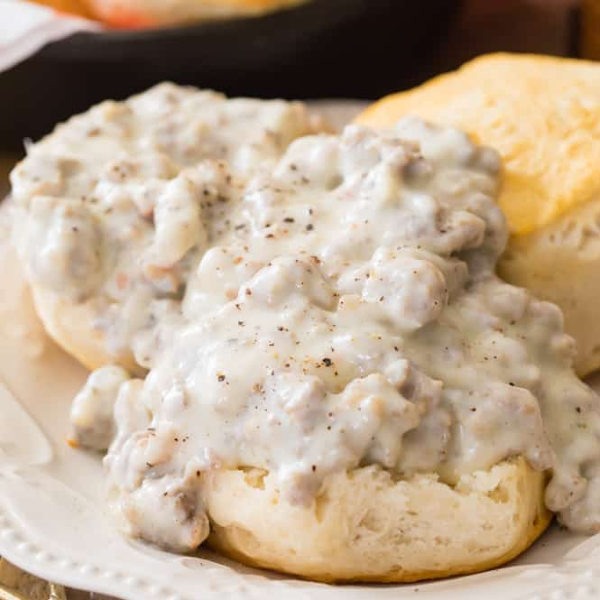

Biscuits & Gravy with Sausage

Description
This recipe is for a southern favorite biscuits and gravy with sausage on the side!
Here are the following ingredients and directions so you can have your own version of the classic.
Ingredients
Biscuits
- 2 cups of all-purpose flour
- 4 teaspoons of baking powder
- 1 tablespoon of white sugar
- 1/2 teaspoon of salt
- 1/2 cup shortening
- 1 egg, beaten
- 2/3 cup of milk
- 1 tablespoon of butter, melted
Gravy
- 1 package of breakfast sausage
- 1/4 cup of butter
- 1/4 cup of all-purpose flour
- One 12 fluid ounce can of evaporated milk
- 1 1/2 cups of water
- Salt & ground black pepper
Steps
- Preheat oven to 400 degrees F (200 degrees C). Grease a baking sheet.
- Whisk 2 cups flour, baking powder, sugar, and salt together in a bowl; cut shortening into flour mixture with a pastry cutter until mixture is crumbly. Mix in egg and milk until incorporated. Turn dough out onto a well-floured work surface and knead for 1 minute.
- Roll dough out to a thickness of 3/4 to 1-inch thick, cut with a biscuit cutter, and place biscuits onto prepared baking sheet. Brush tops of biscuits with melted butter.
- Bake in the preheated oven until biscuits are golden brown, 8 to 10 minutes.
- Cook and stir sausage in a large skillet over medium heat until browned and crumbly, about 10 minutes. Drain excess grease. Stir 1/4 cup butter into sausage until butter has melted and mix in 1/4 cup flour until thoroughly combined. Pour evaporated milk and water into sausage mixture, bring gravy to a simmer, and reduce heat to low; simmer gravy until thickened, about 5 minutes. Season gravy with salt and black pepper to taste.
- Serve!